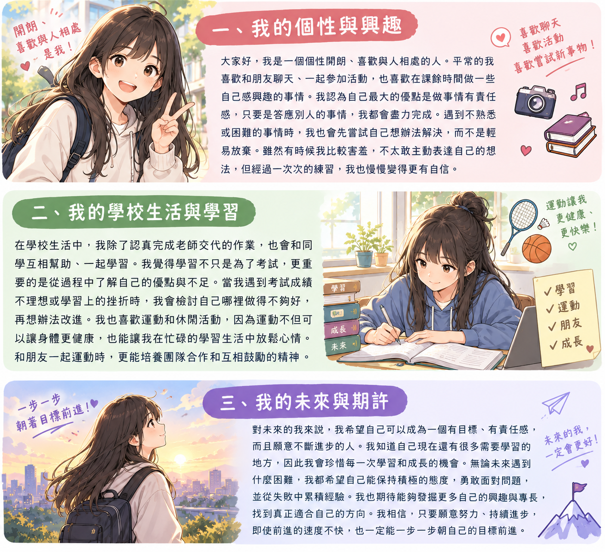

生日及星座：5/27雙子座
畢業學校：南高國中
個人特色亮點：跑步快
期待：順利畢業
大家好，我是一個個性開朗、喜歡與人相處的人。平常的我喜歡和朋友聊天、一起參加活動，也喜歡在課餘時間做一些自己感興趣的事情。我認為自己最大的優點是做事情有責任感，只要是答應別人的事情，我都會盡力完成。遇到不熟悉或困難的事情時，我也會先嘗試自己想辦法解決，而不是輕易放棄。雖然有時候我比較害羞，不太敢主動表達自己的想法，但經過一次次的練習，我也慢慢變得更有自信。
在學校生活中，我除了認真完成老師交代的作業，也會和同學互相幫助、一起學習。我覺得學習不只是為了考試，更重要的是從過程中了解自己的優點與不足。當我遇到考試成績不理想或學習上的挫折時，我會檢討自己哪裡做得不夠好，再想辦法改進。我也喜歡運動和休閒活動，因為運動不但可以讓身體更健康，也能讓我在忙碌的學習生活中放鬆心情。和朋友一起運動時，更能培養團隊合作和互相鼓勵的精神。
對未來的我來說，我希望自己可以成為一個有目標、有責任感，而且願意不斷進步的人。我知道自己現在還有很多需要學習的地方，因此我會珍惜每一次學習和成長的機會。無論未來遇到什麼困難，我都希望自己能保持積極的態度，勇敢面對問題，並從失敗中累積經驗。我也期待能夠發掘更多自己的興趣與專長，找到真正適合自己的方向。我相信，只要願意努力、持續進步，即使前進的速度不快，也一定能一步一步朝自己的目標前進。
